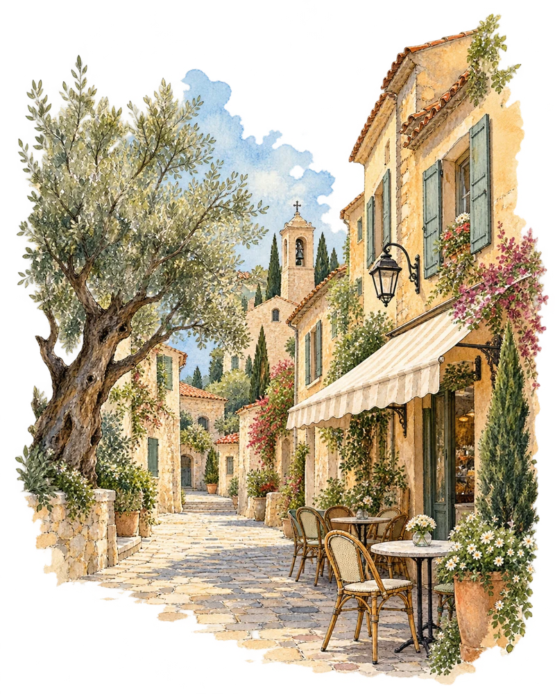
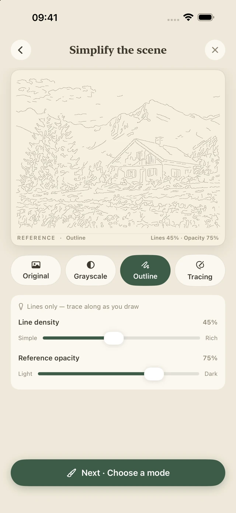
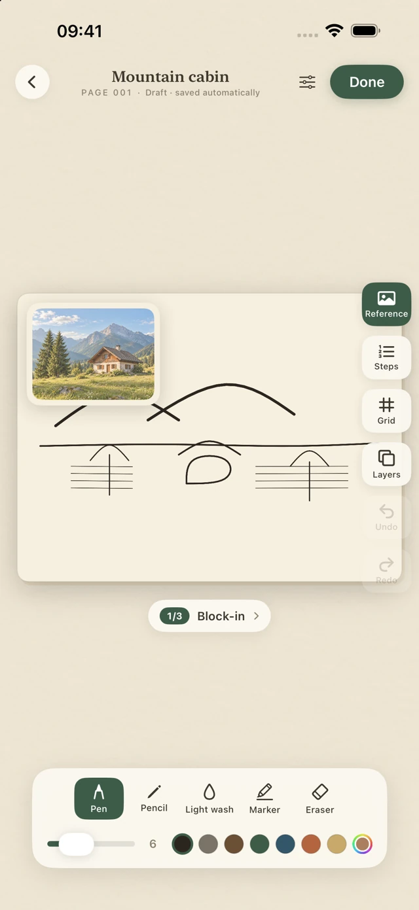
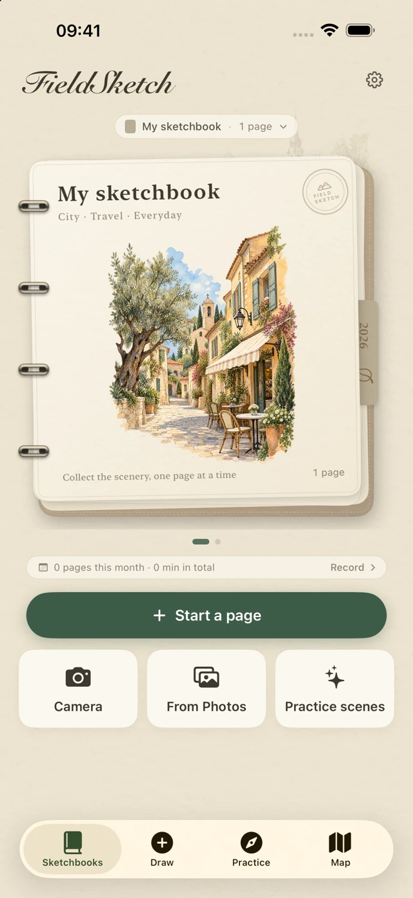

Find the main lines
Switch between the photo, grayscale and outlines. Adjust line density to keep the shapes you want to draw.
Start with the shoreline of a lakeside town, or use a photo from your own walk. Draw on iPhone or iPad, then bind the finished page into your sketchbook.

Switch between the photo, grayscale and outlines. Adjust line density to keep the shapes you want to draw.
Trace a faint outline, keep the reference beside the paper or start with a blank page. Draw with a finger or Apple Pencil on a compatible iPad.
Reopen a bound lakeside lesson and draw it again with a lighter guide. Compare the two attempts side by side.
Choose “Free first lesson · Lakeside town” from an empty sketchbook or the practice gallery. You can start without a photo or a trial.
Place the shore near the lower third of the page. Compare the height of the tower with the rooftops, then add short strokes for the reflections.
Tap Done, give the drawing a title and bind it. Open the page from your sketchbook to draw again or export it.



CXY Studio does not collect personal data through FieldSketch. No account is required. Drawings, layers, reference photos, saved places and practice records stay on your device. The app has no ads, third-party analytics or cross-app tracking.
The camera is used when you choose to take a photo. With the system photo picker, the app reads only the photos you select. Location recording is off by default. You can enable it in Settings and remove a location from an individual page. Apple handles requests for maps and place names.
Apple handles trials, purchases and restores. FieldSketch verifies access on your device. CXY Studio does not receive payment details. Sharing or exporting sends the selected file to the destination you choose.
You can delete pages or revoke permissions in system settings. Before removing the app, export any editable projects you want to keep. Deleting the app removes its local files. Copies you have already shared or exported are managed separately.
The lakeside lesson stays free. For your own photos and other subjects, choose a 3-day trial or a one-time purchase. The trial does not renew or charge automatically. You can still view and export existing work after it ends.
In FieldSketch settings, open “Trial and permanent unlock” and tap “Restore purchases”. Use the Apple Account you purchased with.
For help or privacy questions, describe your device, system version and the steps you took. GitHub reports are public. Keep personal artwork, passwords and payment details out of your report.
Contact support on GitHub